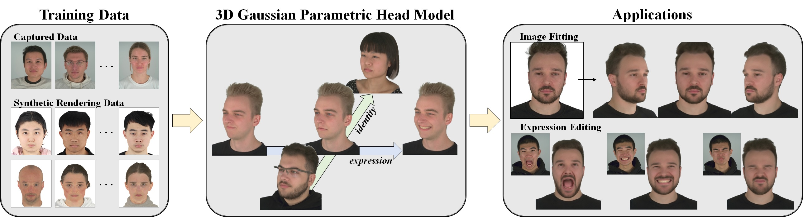

1Tsinghua University 2NNKosmos Technology
Creating high-fidelity 3D human head avatars is crucial for applications in VR/AR, telepresence, digital human interfaces, and film production. Recent advances have leveraged morphable face models to generate animated head avatars from easily accessible data, representing varying identities and expressions within a low-dimensional parametric space. However, existing methods often struggle with modeling complex appearance details, e.g., hairstyles and accessories, and suffer from low rendering quality and efficiency. This paper introduces a novel approach, 3D Gaussian Parametric Head Model, which employs 3D Gaussians to accurately represent the complexities of the human head, allowing precise control over both identity and expression. Additionally, it enables seamless face portrait interpolation and the reconstruction of detailed head avatars from a single image. Unlike previous methods, the Gaussian model can handle intricate details, enabling realistic representations of varying appearances and complex expressions. Furthermore, this paper presents a well-designed training framework to ensure smooth convergence, providing a robust guarantee for learning the rich content. Our method achieves high-quality, photo-realistic rendering with real-time efficiency, making it a valuable contribution to the field of parametric head models.

Fig 1. We utilize hybrid datasets comprising captured multi-view video data and rendered image data from 3D scans for training our model. The trained model can be manipulated using decoupled identity and expression codes to produce a diverse array of high-fidelity head models. When presented with an image, our model can be adjusted to reconstruct the portrait in the image and edit the expression according to any other desired expressions.
Fig 2. Overview of 3D Gaussian Parametric Head Model. The pipeline of our method. Our training strategy can be divided into a Guiding Geometry Model for initialization, and a final 3D Gaussian Parametric Head Model. Deformations of each model are further decoupled into identity-related and expression-related deformations. Rendering involves using DMTet to transform the initial model into a mesh and 3D Gaussian Splatting for the Gaussian model. Features from both models are finally upsampled to high-resolution portrait images through a convolutional network $\boldsymbol{\Psi}$. During inference, our output exclusively comes from the Gaussian model.
@inproceedings{xu2023gphm,
title={3D Gaussian Parametric Head Model},
author={Xu, Yuelang and Wang, Lizhen and Zheng, Zerong and Su, Zhaoqi and Liu, Yebin},
booktitle={Proceedings of the European Conference on Computer Vision (ECCV)},
year={2024}
}
HeadNeRF: Hong, Yang and Peng, Bo and Xiao, Haiyao and Liu, Ligang and Zhang, Juyong. HeadNeRF: A Real-Time NeRF-Based Parametric Head Model. Proceedings of the IEEE/CVF Conference on Computer Vision and Pattern Recognition (CVPR), 2022
MoFaNeRF: Zhuang, Yiyu and Zhu, Hao and Sun, Xusen and Cao, Xun. MoFaNeRF: Morphable Facial Neural Radiance Field. Proceedings of the European Conference on Computer Vision (ECCV), 2022.
PanoHead: An, Sizhe and Xu, Hongyi and Shi, Yichun and Song, Guoxian and Ogras, Umit Y. and Luo, Linjie. PanoHead: Geometry-Aware 3D Full-Head Synthesis in 360deg. Proceedings of the IEEE/CVF Conference on Computer Vision and Pattern Recognition (CVPR), 2023.